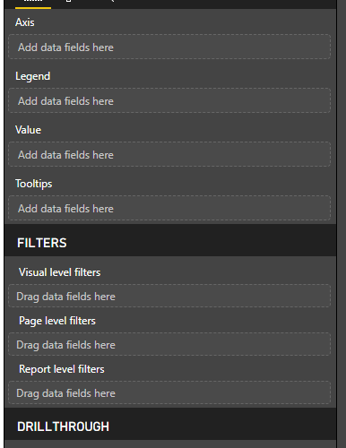

I like creating multiple visualisations from a single query. But it would be helpful if we could apply visualisation-level filters to some of them. ie, Vis 1 might represent all data in the query, Vis 2 might focus on a subset of info.
I can do it in a hacky kind of way, but it’s not very clean or elegant!
This site is in read only mode. Please continue to browse, but replying, likes,
and other actions are disabled for now.
I agree this would be useful. It’s basically a Query Filter implemented on the visualization level. But Query Filters are executed in the browser, so I can see it being a performance drain depending on the number of rows returned. This is where tools like Crossfilter really shine.
Crossfilter is really fast.
This Github issue requesting Crossfilter support was closed for being too related to #3013. But both issues don’t necessarily address the same problem. Tools like Crossfilter provide drill-down support, yes, as seen in tools like DC.JS. But CF is just as useful for basic data filtering without the need for a drill-down. Pass it basic structured data and it can filter with ease. I would be curious to see how Crossfilter performs compared to the current filter implementation?
Could implementing Crossfilter behind Query Filters bring a performance boost?
For me, the drilldown ability is different (from a user perspective) from what I’m thinking about - but that could be because I wasn’t clear enough before.
I think there’s allowing the end-user of a dashboard the ability to filter - and this fits well with the drilldown ability.
What I’m more concerned with (at this point) is ‘hard coding’ the visualisation filter at the design phase.
Here’s the equivalent pane in PowerBI - at the point I’m defining the visual, I can select any additional Visual Level Filters for that visualisation. That filter isn’t then configurable in the final dashboard.

Appreciate that the technical solution might be the same though for in-dashboard filtering though.
I know Redash intends queries to be single purpose, but this type of functionality would allow us to reduce the overall number of near-identical queries we have to make.
For now, I created a secondary field on the dataset with NULLs against the series I don’t want to include, and then fudge the axis of the chart to ignore them.
{kind=link}